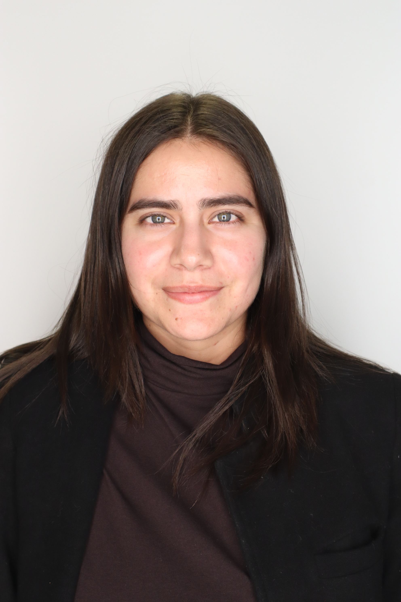

Emily Arteaga-Garcia
Frontend & Assessment Software Engineer
Based in San Francisco Bay Area
Hi, I'm Emily Arteaga-Garcia — a software engineer specializing in frontend development, user experience, and research-based educational technology.
I build thoughtful, accessible tools that help people learn, teach, and make sense of complex information. My work spans web applications, assessment platforms, dashboards, health education tools, and human-centered research software.
Currently, I work at Stanford University on ROAR, an online assessment platform grounded in reading and dyslexia research. I contribute to frontend systems, assessment applications, score reports, multilingual user experiences, and tools used by schools and researchers.
As a native Spanish speaker and Latina in STEM, I care deeply about building technology that supports diverse communities, improves access, and feels clear and usable for real people.